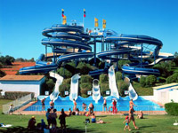
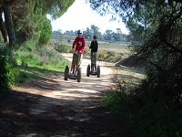
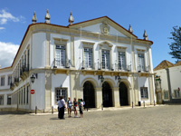
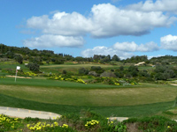

Lagos Things to do - Find Now!
One of the things that makes western Algarve's Lagos an ideal spot for so many is the amount of things to do! It is brilliant for water sports, with surfing, windsurfing, stand up paddle boarding, kayaking, diving and kitesurfing all being firm favourites. There's also a fantastic choice of boat trips going out from Lagos marina and from some of the beaches, where you can cruise along the coastline to the stunning grottos around the famous Ponta da Piedade, or you can jet off into the ocean for a spot of dolphin watching!
For those who prefer to stay on dry land, mountain biking is a really popular activity (with several companies doing trips and bike hire) and there are plenty of great places for walking and running too. Lagos is steeped in history, with plenty of sights to take in along the way, whether it be on bike, foot or on the tourist train. For golf lovers, there are several excellent courses within easy reach, the closest being the Onyria Palmares Golf Course at the back of Meia Praia beach and Boa Vista and Espiche Golf further west towards Sagres.
For family fun, there is Lagos Zoo in Barão de São João, which is a lovely day out for all ages and the water parks and popular Zoomarine theme park are less than 40 minutes away.
Algarve Attractions
 Two of the most popular Algarve attractions are Zoomarine theme park and Aqualand Algarve water park. Both are fantastic days out for the whole family, with Zoomarine and it's marine life shows, attractions and 4D cinema and Aqualand with fun rides for the little ones right up to white knuckle rides for the thrill seekers!Ria Formosa Natural Park Segway Tour & Birdwatching
See the protected areas of the Algarve region of Portugal on a 1.5-hour Segway tour of Rio Formosa Natural Park, located 20 minutes outside of Faro. Ride the paths through the park, observing the huge variety of bird life and learning about the ecosystem.
Algarve Sightseeing, Shopping & Day Trips
With castles, churches, monuments and areas of stunning natural beauty, the opportunities for sightseeing in the Algarve are endless! There are also traditional and famous markets in Loulé and Quarteira to enjoy and organised day trips to Lisbon, Fatima, Gibraltar and Seville for shopping and sightseeing.
Algarve Sports
Thanks to the great weather, great facilities and a culture that is active and outdoorsy it's hardly surprising that there's an abundance of Algarve sports & leisure activities to choose from! There's golf, horse riding, tennis, motor sports and karting, fishing, archery, mountain biking, trail biking, bowling & so much more!